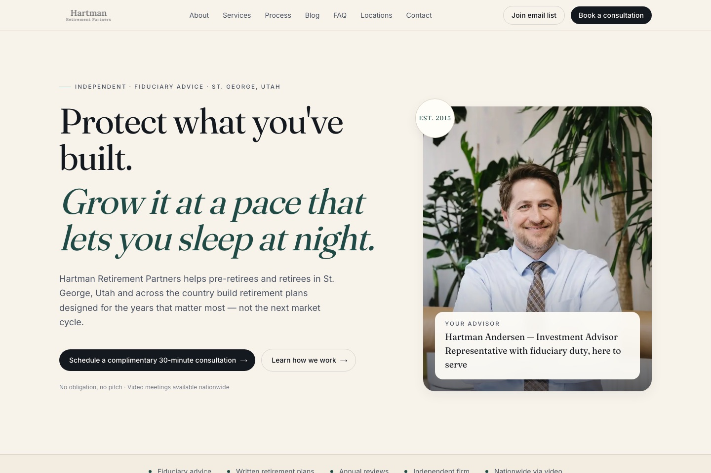

Hartman Retirement Partners Live
Hartman Retirement Partners is an independent, fiduciary retirement planning firm serving pre-retirees and retirees nationwide — retirement income, Social Security optimization, tax planning, and wealth preservation, with transparent fees and no product sales.
The site carries their promise — "protect what you've built, grow it at a pace that lets you sleep at night" — through a calm, credible design built to turn visitors into scheduled consultations.
Visit hartmanretirement.com →